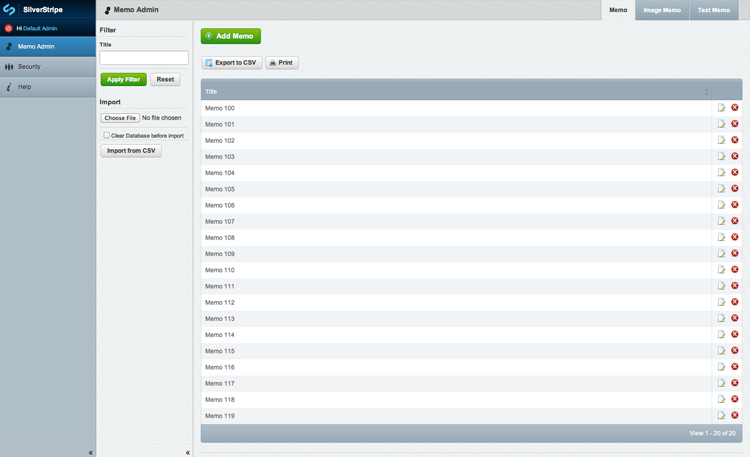

Developing rich html applications
with Entwine, Backbone.js & SilverStripe
Use Entwine, Backbone.js & SilverStripe
They're better than what you're using
Thanks
Developing rich html applications
with Entwine, Backbone.js & SilverStripe
Hello, my name is Hamish
Developing rich html applications
with Entwine, Backbone.js & SilverStripe
and jQuery, Underscore, Showdown, Compass,
PHP, Apache, MySQL,
.......
SilverStripe
SilverStripe
Framework
SilverStripe
CMS
SilverStripe
Good for what ails you
Entwine
Entwine
The C for your MV framework
Entwine
Bringing structure to jQuery style code
$('ul#todos li').live('click', function(e) {
if ($(e.target).is('.readonly')) { readonly(); }
else {
if ($(e.target).is('.warning') { warning(); }
original();
}
});
Entwine
Specifically better
$('ul#todos li').entwine({
onclick: function(){ original(); }
});
$('ul#todos li.readonly').entwine({
onclick: function(){ readonly(); }
});
$('ul#todos li.warning').entwine({
onclick: function(){ warning(); this._super(); }
});
Entwine
You might as well eat that cake fatty
Entwine
You've already got it
Backbone.js

Backbone.js
Model citizen
And so, a quick demo
Gone through quickly
SilverStripe - server side model
mysite/code/models/Memo.php
class Memo extends DataObject {
static $db = array(
'Title' => 'Varchar',
'Tags' => 'Varchar'
);
}
SilverStripe - more models
mysite/code/models/TextMemo.php
class TextMemo extends Memo {
static $db = array(
'Note' => 'Text'
);
}
SilverStripe - server side admin
mysite/code/MemoAdmin.php
class MemoAdmin extends ModelAdmin {
public static $managed_models = array('Memo');
public static $url_segment = 'memo-admin';
public static $menu_title = 'Memo Admin';
}
SilverStripe - server side admin
SilverStripe - REST Read
class Memo extends DataObject {
use RESTItem;
static $default_fields = array('ID', 'Title', 'Tags');
...
}
class Memo_Handler extends RESTItem_Handler {
static $allowed_actions = array('GET');
function GET($request) { return $this->respondWith('*'); }
}
SilverStripe - REST Collection
class Memos extends ViewableData {
use RESTCollection;
function getItems() { return Memo::get()->toArray(); }
function getItem($id) { return Memo::get()->byID($id); }
}
class Memos_handler extends RESTCollection_Handler {
static $allowed_actions = array('GET');
function GET($request) {
return $this->respondWith('Items.*');
}
}
SilverStripe - REST Create & Write
<Code removed for being too long and boring>
Trophy achieved - REST interface
Backbone.js - client side model
var Memo = Backbone.Model.extend({
idAttribute: 'ID',
urlRoot: 'rest/Memo',
defaults: {'$type': 'Memo'}
});
var Memos = Backbone.Collection.extend({
model: Memo,
url: 'rest/Memo'
});
Backbone.js - more models
var converter = new Showdown.converter();
var TextMemo = Memo.extend({
defaults: {'$type': 'TextMemo'},
getNoteHtml: function(){
return converter.makeHtml(this.get('Note'));
}
});
Trophy achieved - was that it?
Entwine - index.html
<div id="scroll">
<ul id="memos"></ul>
</div>
Entwine - bootstrap
$('#memos').entwine({
onadd: function(){
this.setMemos(new Memos());
},
Memos: null,
setMemos: function(memos){
this._super(memos);
memos.on('reset', function(){ this.render(); }, this);
memos.fetch();
}
render: function(){
/* Create <li class="memo"> elements, one per memo */
}
});
Entwine - rendering memos
$('.memo').entwine({
Memo: null,
Tmplt: '<h1 data-attr="Title"><%= get("Title") %></h1>',
render: function(){
this.html(_.template(this.getTmplt(), this.getMemo()));
}
});
$('.memo.textmemo').entwine({
getTmplt: function() {
return this._super() +
'<div data-attr="Note"><%= getNoteHtml() %></div>';
}
});
Entwine - deets to your kids
$('.memo *').entwine({
getMemo: function() {
return this.parents('.memo').getMemo();
}
});
Entwine - handling input
$('.memo > *').entwine({
onclick: function(){
var input = this.getInput();
if (input) input.insertAfter(this);
}
});
$('.memo > [data-attr]').entwine({
getInput: function(){
return $('<input type="text" />');
}
});
$('.memo > [data-attr=Note]').entwine({
getInput: function(){
return $('<textarea></textarea>');
}
});
Entwine - dealing with it
$('.memo input, .memo textarea').entwine({
inpVal: function(v) { return this.val(v); },
onadd: function() {
this.inpVal(this.getMemo().get(this.getProperty()));
},
onfocusout: function(){
this.getMemo().set(this.getProperty(), this.inpVal());
this.getMemo().save();
this.remove();
}
});
$('#memos .memo textarea').entwine({
inpVal: function(v) { return this.text(v); }
});